התכנית נבנתה מחדש מהמוצר, אחרי ששאלת למה המעגל הגמיש חסר. בדיקה עצמאית עברה על כל הקבצים ומצאה שהלוח לא נכנס במארז, שמיקומים שונים במודל ובלוח, שאין מעמד ואין קושחה ללוח שלנו, סתירות מול דף הדרישות, ובטיחות ותקינה שלא תוכננו. הכול עכשיו ברשימה אחת עם בדיקה אוטומטית. תוקנו גם שלוש שורות שגויות בהערות התכנון ובתכנית הבדיקה.
CYPHIX Band α · חומרה · עודכן 16.11.2026
התכנית: מהמחשב למפעל
התכנית בנויה מהמוצר עצמו: כל חלק, כל חיבור בין שני חלקים וכל דרישה, ולכל אחד קובץ, בדיקה ושלב. חמשת השלבים והסיכונים נשארו, והם עוברים על הרשימה הזאת.
עכשיו
שלב 0 לא נגמר: הרשימה המלאה מראה מה עוד חסר
- התכנית נבנתה מחדש מהמוצר, אחרי ששאלת למה המעגל הגמיש חסר. הרשימה המלאה למטה, ועוד אף פריט בה לא נבדק במדידה.
- בדיקה עצמאית, שלא אני כתבתי, עברה על כל הקבצים. היא מצאה שהלוח לא נכנס במארז, שאין מעמד ואין קושחה ללוח שלנו, וסתירות מול דף הדרישות.
- הבא בתור: קובץ מיקומים אחד שגם המודל וגם הלוח קוראים ממנו, ואז האי מחדש סביב הלוח האמיתי.
למה התכנית פספסה
התכנית הקודמת נבנתה מרשימת סיכונים, ומה שלא נראה מסוכן לא הפך למשימה של אף אחד. כך נפלו המעגל הגמיש, נקודות הבדיקה ותכנית הבדיקה, וההתאמה של הלוח למארז. כל אחד מהם נמצא רק כששאלת.
מה השתנה
- התכנית בנויה מהמוצר. כל מה שספק, מפעל או בית החולים צריכים לקבל, כולל המעמד, הקושחה, ההרכבה והתקינה. הכול בקובץ אחד בתיקייה, והטבלאות בדף נוצרות ממנו.
- כל חיבור בין שני חלקים הוא שורה. חיבור מוגדר רק כששני הקבצים מסכימים על אותה מידה. כאן נפלו הפלקס והלוח הארוך.
- לכל דרישה בדף הדרישות יש בדיקה. דרישה בלי בדיקה מסומנת באדום.
- בדיקה אוטומטית. היא נכשלת אם יש שורה בלי קובץ, בלי אחראי או בלי שלב, או דרישה מדף הדרישות בלי שורה.
- לפני כל שלב, בודק עצמאי. מישהו שלא כתב את התכנון עובר על כל הקבצים, כמו היום. שלב לא מתחיל כשחסר משהו שהוא צריך.
מה אמרתי ולא היה מדויק
- אמרתי ששישת החיבורים החסרים בלוח הם כולם בסוללה. ארבעה כן, אחד באדמה ואחד ב-3V של המדחום.
- ״אפס התנגשויות במודל״ היה נכון רק כי הלוח האמיתי לא היה בתוך המודל.
- שלב 0 דרש ש״כל רכיב ניתן לקנייה״. זה לא נבדק.
- בהערות התכנון היה כתוב 131 רכיבים ו-0 שגיאות. נכון: 136 על הלוח, מהם 128 לקנייה, ו-3 מעברים שמחוברים רק בצד אחד. תוקן.
מה חסר, לפי הסדר
קודם מה שעוצר את ההזמנה של חמש היחידות הראשונות, אחר כך מה שעוצר את הניסוי בבית החולים.
לפני ההזמנה של שלב 3
- מארז ללוח האמיתי. הלוח 32 מ״מ והאי מצויר ל-25. הקפיצים, המנוע, הסוללה והנורית נמצאים במקומות שונים במודל ובלוח. קודם קובץ מיקומים אחד, ואז אי חדש.
- לסגור את הלוח. 6 חיבורים, מעבר ידני על הכניסות, שכבות וסימוני יישור, קובצי ייצור, ומהנדס שמבקר.
- רשימת רכיבים שאפשר להזמין. מק״ט ומלאי לכל רכיב, וסוללה עם תעודות.
- חלקים מכניים שאפשר לייצר. שרטוטים, אטימה, אחיזה ללוח, וגרסה מודפסת לאב-טיפוס.
- הרצועה. תבנית, חומר, מידות, הלחיצה של פיני ה-RA על הפלקס, וצד המגעים במחבר.
- המעמד והספק. חשמל, הגבלת זרם, ומה מחזיק את הצמיד במקום.
- קושחת המוצר. כולל החסימה של הקלטה בזמן טעינה.
- ניתוח סיכונים. לפני שיחידה שלנו עולה על אדם, גם עליך.
- שלבים 1 ו-2 על חומרה. הם מחכים לך. ההוראות של שלב 1 מתעדכנות לגדלים של גרסה 3.2.
לפני הניסוי בבית החולים
- בדיקות במעבדה. בטיחות חשמלית, תאימות אלקטרומגנטית, ביצועי האק״ג, וחומרים במגע עם העור.
- האפליקציה ב-4 ערוצים ו-500 דגימות, עם חיבור מוצפן. רק באישורך.
- תיק הניסוי. תכנית ניסוי, תוויות, הוראות שימוש וועדת הלסינקי.
סתירות שצריך להחליט
כאן שני קבצים, או התכנון ודף הדרישות, אומרים דברים שונים. ליד כל אחת כתוב מי מחליט.
| מה | מה כתוב, ואיפה | מי מחליט |
|---|---|---|
| סוללה ומטען | דף הדרישות: 150–300 mAh ו-BQ25120A. התכנון: 100 mAh ו-MCP73831. | אתה |
| כפתור | דף הדרישות: כפתור. התכנון: משטח מגע. | אתה |
| אטימה | דף הדרישות: IP54. כוונת התכנון: IP68. | אתה |
| רצועה | דף הדרישות: סיליקון, 22 מ״מ. המודל: FKM, 24 מ״מ. | אתה, עם המעצבת |
| זרם מטופל בתקלה | דף הדרישות: מתחת ל-10 µA. התכנון: 32 µA, מתחת למגבלת התקן, 50 µA. | המהנדס ואתה |
| משקל | דף הדרישות: עד 40 גרם. החישוב נעשה לסיליקון ולמשטחים הקטנים. | אני מחשב שוב |
| גודל הלוח והמיקומים | הלוח 32 מ״מ, האי מצויר ל-25, וארבעה חלקים במקומות שונים. | אני |
| חיישן אופטי | בסכמה MAX30102, במודל MAXM86161. | אני |
| אנטנה | חישוב הגודל: אנטנה בכתף המארז. הלוח: האנטנה של המודול. | מהנדס RF |
| קצב דגימה | נספח א: השבב דוגם 500. התכנון: 1,000 והפחתה, כי ב-500 רוחב הפס של השבב 131 Hz בלבד. | אני, ונסגר בשלב 2 |
העיצוב התעשייתי, גרסה 3.2
הגוף, הזיזים, המוט, הרצועה והסגירה בסקוץ' נשארו בדיוק כמו בגרסה 3.1. רק האלקטרודות השתנו: משטח פלדה אחד בכל צד, במקום גלולות נפרדות.
טוען את המודל
גוררים לכל כיוון כדי לסובב, גם עם האי למטה. צביטה או גלגלת לזום. "רצועה שקופה" מראה את המוליך שבתוכה. "הלוח" ו"הפלקס" מציגים את הלוח האלקטרוני ואת המעגל הגמיש שבתוך הרצועה, ו"מפורק" מפריד את שני צדי הלוח.
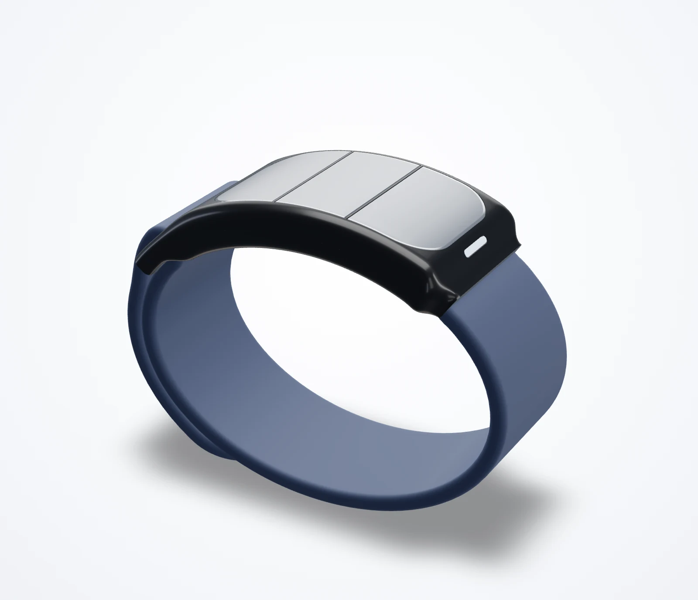
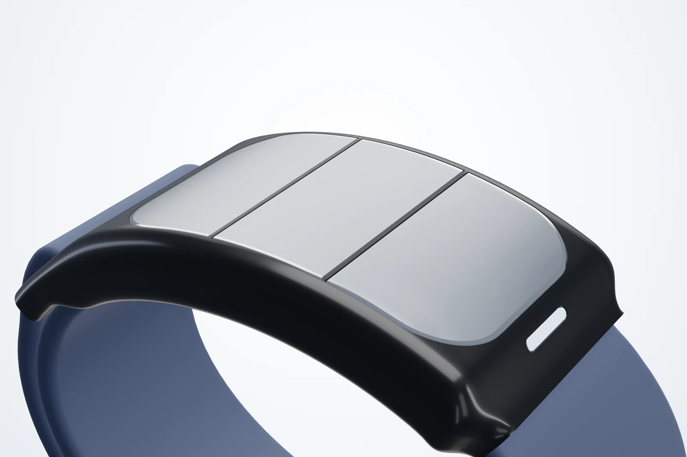
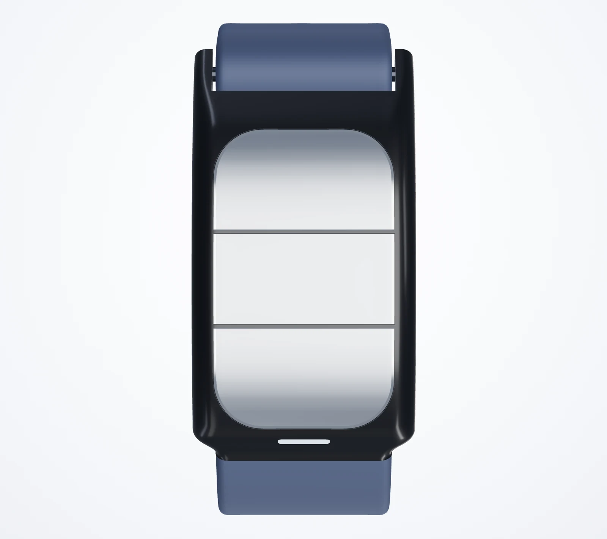
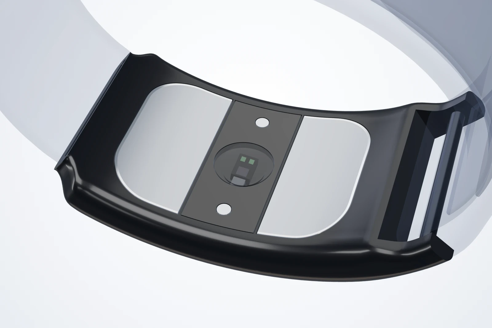
מה השתנה
- צד הרגל: משטח פלדה אחד. במקום שלוש גלולות במסגרות, משטח אחד ומעוגל ששני קווים דקים בצבע הגוף מחלקים ל-LL1, RLD ו-LL2. קו מלוטש אחד מקיף את כולו.
- צד היד באותו קו מתאר. LA1 ו-LA2 בקצוות, וביניהן קרמיקה שחורה מבריקה עם עדשת ספיר שבולטת 0.35 מ״מ כדי לגעת בעור. שני מגעי הטעינה שטוחים, במקום שקועים בגומות.
- אלקטרודות גדולות יותר. LL1 ו-LL2 394 ממ״ר כל אחת, לעומת 290 בגרסה 3.1. RLD 287, וכל LA 296, לעומת 265.
- אותה מתכת. פלדה 316L בכל שבעת המשטחים, פנים מט וקו מלוטש. משטחי ה-RA על הרצועה נשארו בצורתם, עם אותו קו מלוטש דק.
- קו האור זז 0.4 מ״מ לכיוון הקצה, כדי לא לגעת במשטח הפלדה.
מה המחיר
- עוד חלק אחד. הקרמיקה השחורה היא חלק נפרד שמודבק ואטום בין שתי אלקטרודות ה-LA.
- מגעי הטעינה נוגעים בעור. כשהם שטוחים, הם תמיד על העור. לכן הדרישה שכבר כתובה בתכנון חשובה עוד יותר: בלי מטען, שני המגעים מנותקים מהמעגל.
- העדשה בולטת, אז במעמד הטעינה יש שקע קטן בשבילה.
46 × 30 × 7.2 מ״מ
האי, בלי הזיזים
394 ממ״ר
כל אלקטרודת LL
296 ממ״ר
כל אלקטרודת LA
7 אלקטרודות
אותה פלדה בכולן
החשמל: סכמה ולוח, גרסה 0.1
הלוח האלקטרוני והמעגל הגמיש שבתוך הרצועה, ב-KiCad. את שניהם אפשר לסובב בתצוגה התלת-ממדית למעלה, בכפתורים "הלוח" ו"הפלקס". עוד לא נבדקו על ידי מהנדס, ושום דבר לא הוזמן.
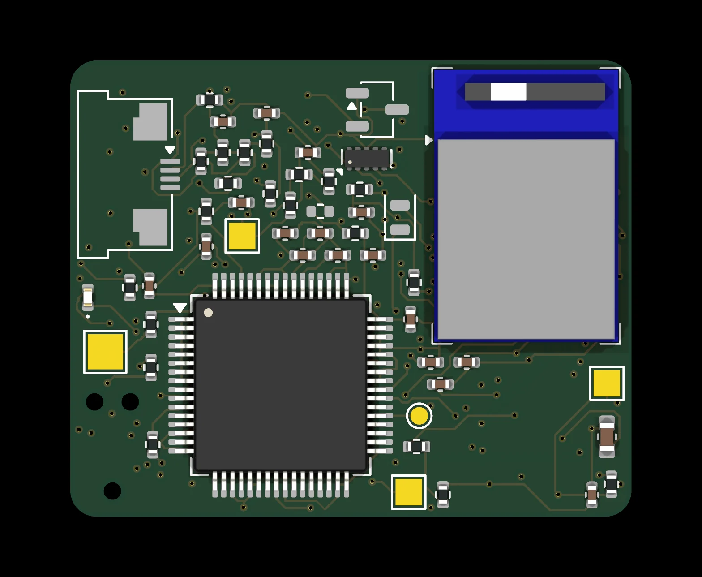
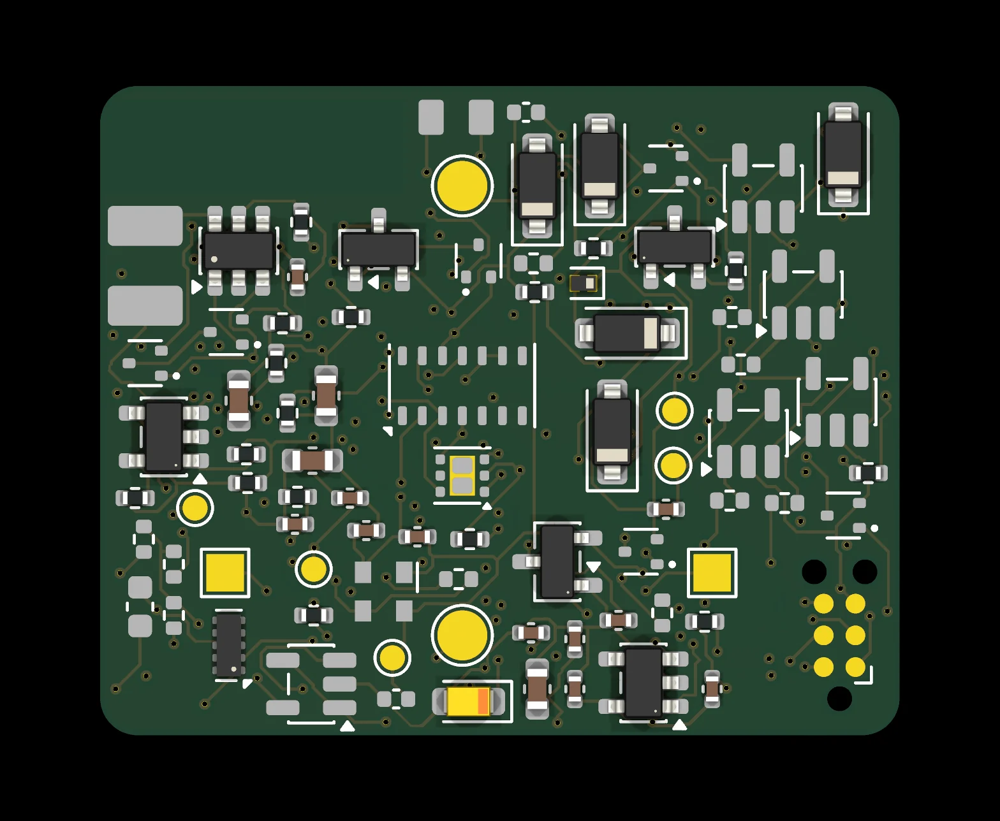
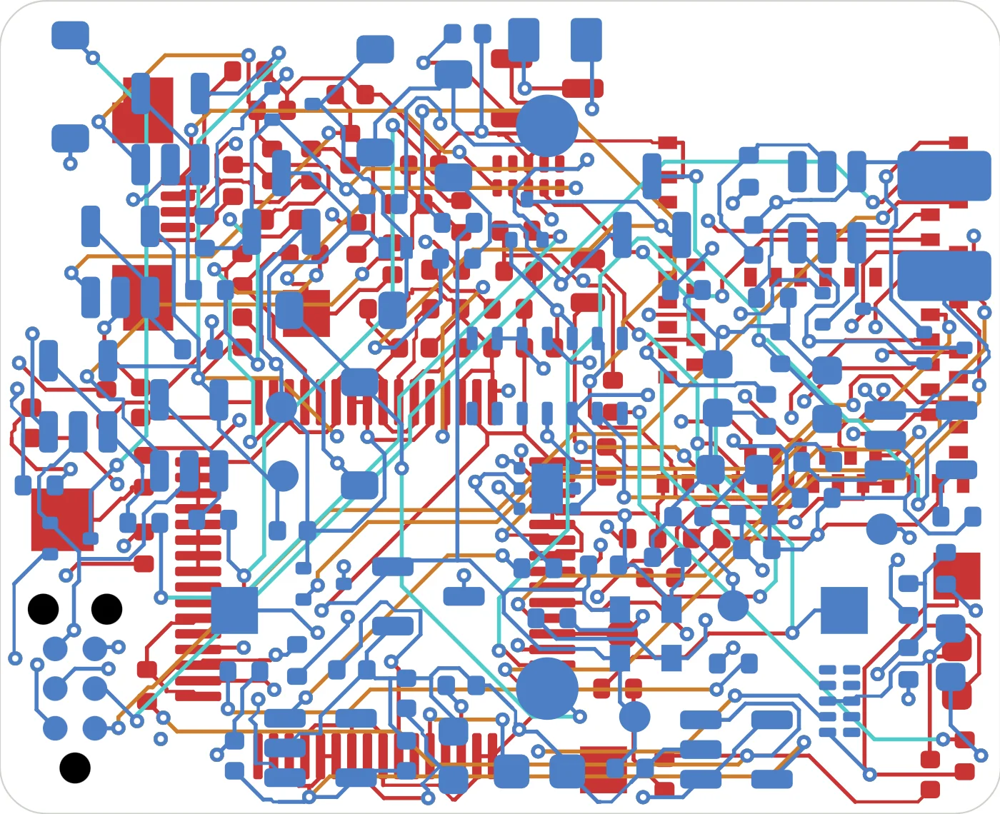
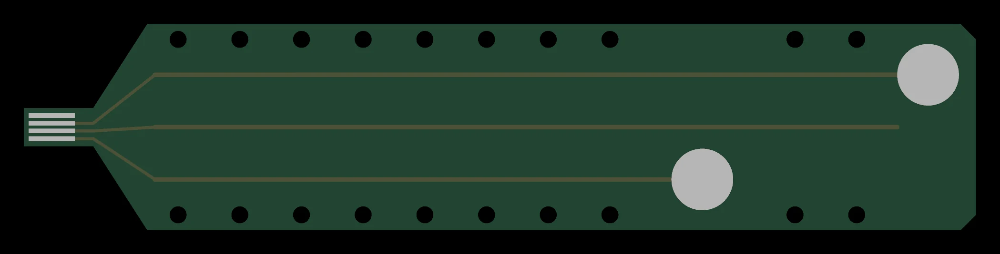
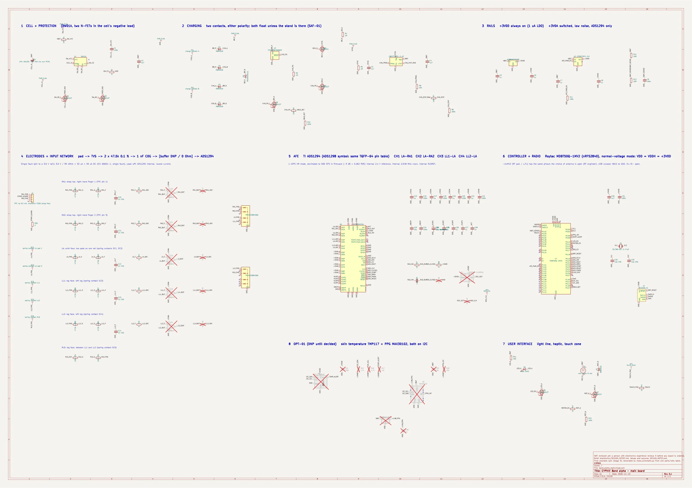
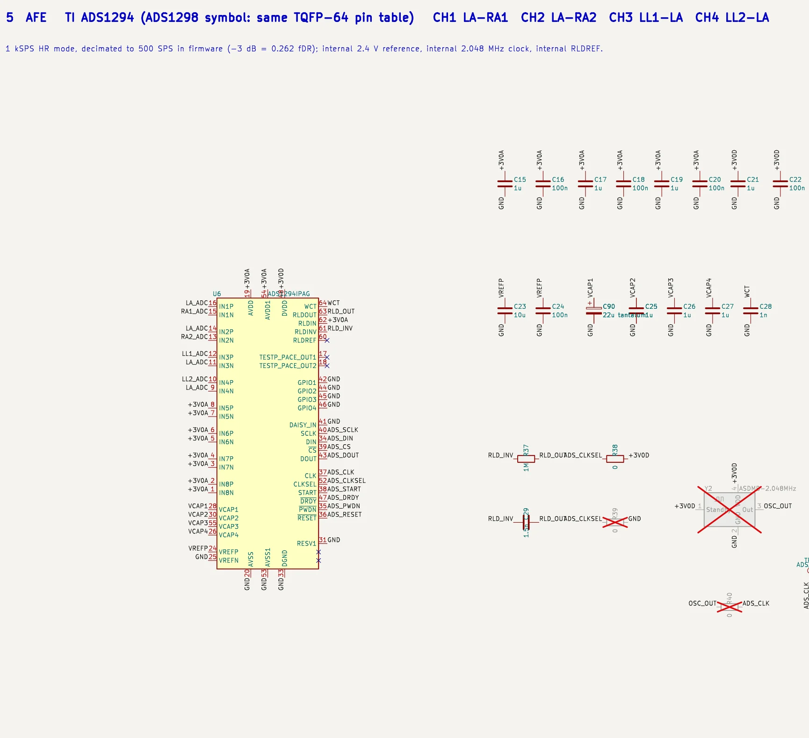
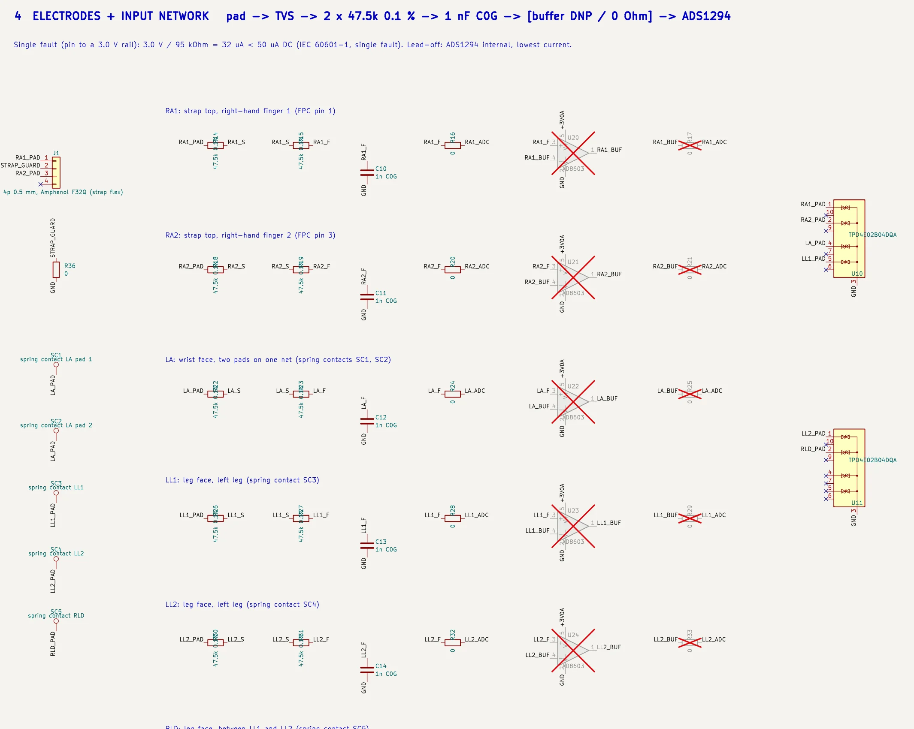
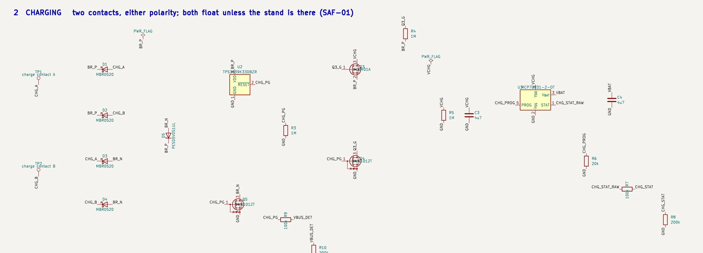
32 × 26 × 0.8 מ״מ
הלוח, 6 שכבות
4.5 מ״מ
עובי עם הרכיבים
61.7 × 13.4 מ״מ
הפלקס, 0.11 עובי
136 רכיבים
על הלוח
איך יודעים שזה עובד
- בדיקות של התכנון, על המחשב (נעשו). KiCad בודק שכל רגל מחוברת לאן שתוכנן, שהנחושת עומדת בכללי היצרן, ושהלוח תואם לסכמה.
- השבב על השולחן (שלב 2). לוח ה-TI שכבר יש לך, מחובר ל-XIAO, עם הקושחה המוכנה. כך בודקים את השבב, את הרעש ואת האלקטרודות על אדם, לפני שיש לוח שלנו.
- הלוח שלנו כשיגיע (שלב 3). 12 צעדים לפי הסדר: חשמל עם הגבלת זרם, מדידת המתחים בנקודות הבדיקה החדשות, צריבה, Bluetooth, אות בדיקה מהשבב, צריכה בהמתנה, בדיקה שמגעי הטעינה מנותקים, טעינה בשני הכיוונים, אלקטרודות מסימולטור, ורק אחר כך אדם, על סוללה בלבד.
העיצוב התעשייתי, גרסה 3
השפה של ההדמיה שלך: אי ממוסגר, שלוש אלקטרודות בצורת גלולה עם שפה מלוטשת, גוף גרפיט ורצועה בכחול-אפור. מוט רק בקצה שהרצועה מתלפפת סביבו. כל מה שתוקן בגרסה 2 נשאר. גרסה 3.2 בראש הדף היא הגרסה הזו עם משטח פלדה אחד בכל צד, והתמונות כאן הן של 3.1.
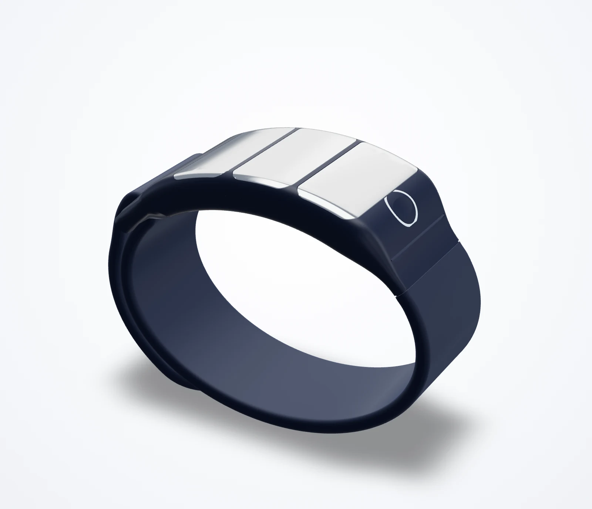
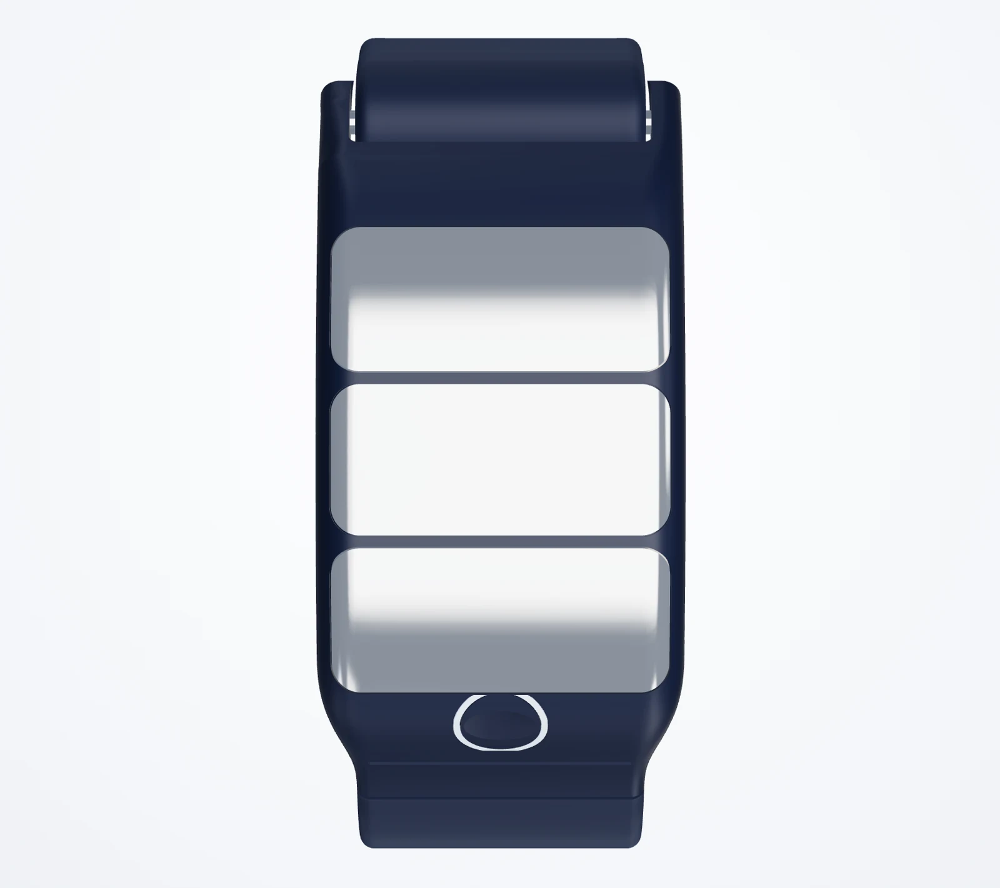
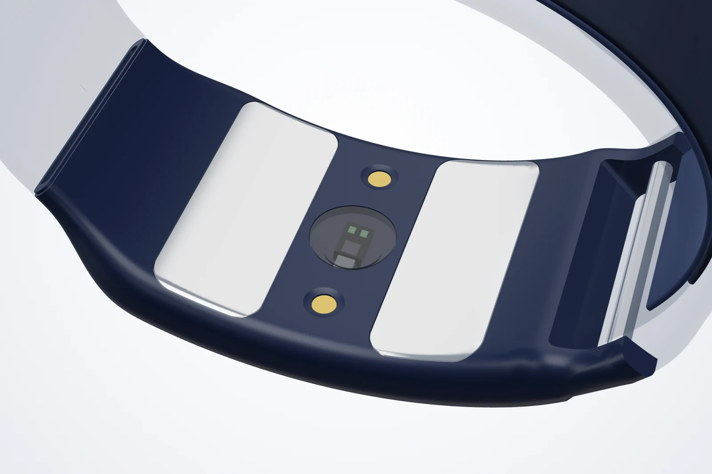

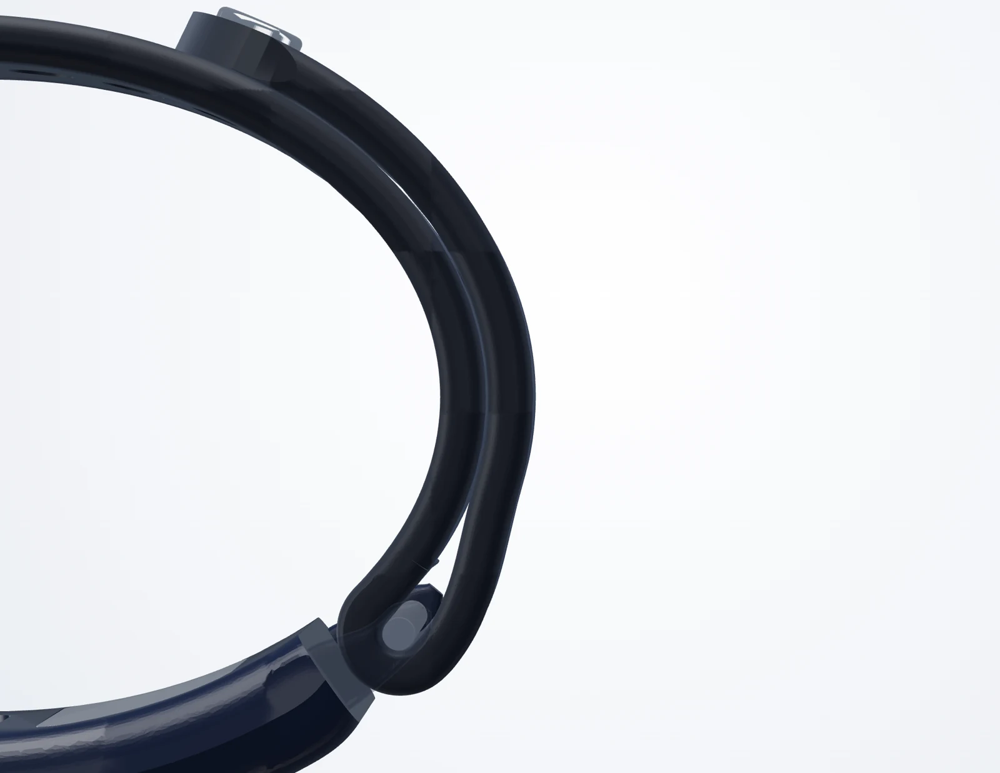

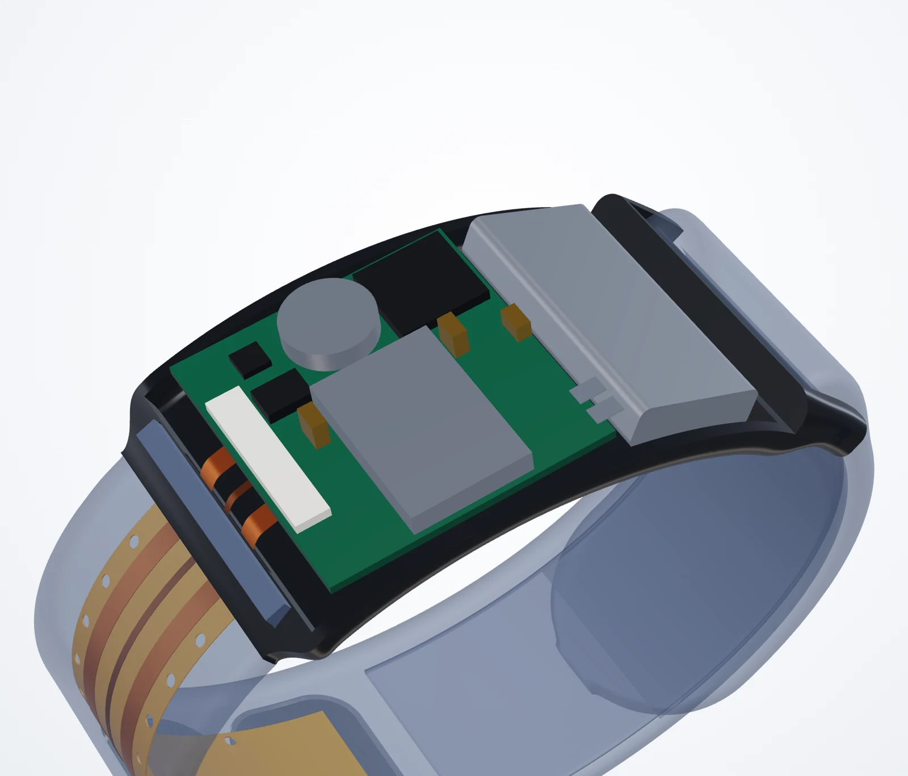


מה לקחתי מההדמיה שלך
- מוט רק איפה שצריך. בקצה החופשי שני זיזים קצרים ומוט, וקצותיו נראים בפינות, כמו אצלך. שם הרצועה עוברת סביב המוט ונסגרת בסקוץ'. בקצה הקבוע אין מוט ואין זיזים, כי שום רצועה לא מתלפפת שם: האי מצטמצם לרוחב הרצועה, והרצועה יוצאת ישר מתחתיו, באותו קו פנימי, ובתוכה המוליך. הכתף הארוכה של גרסה 2 ירדה.
- שלוש אלקטרודות בצורת גלולה, זו לצד זו בתוך מסגרת דקה. כל אחת היא חתיכת פלדה אחת: פנים מט ושפה מלוטשת שתופסת את האור. אותו סגנון בשני משטחי ה-LA ובשני משטחי ה-RA.
- צבעים. גוף גרפיט ורצועה בכחול-אפור.
- בלי כפתור בולט. קו אור קצר במסגרת, על קו האמצע. המסגרת סביבו היא אזור מגע, והמכשיר מתעורר גם כשנוגעים באלקטרודות. זו הצעה: אם תעדיף לחיצה אמיתית, באותו מקום אפשר מתג מתחת לממברנה.
מה לא כמו בהדמיה, ולמה
- הגודל. בהדמיה האי 35 × 26 × 6 מ״מ, והלוח והסוללה לא נכנסים בזה. כאן הוא 46 × 30 × 7.2, ועם הזיזים 52. זו השפה של ההדמיה בגודל שיצא מהחישוב.
- האלקטרודות רחבות יותר. בהדמיה כל אחת בערך 147 ממ״ר. כאן 290, כי ביקשת אלקטרודות גדולות יותר. לכן הגלולות פחות צרות מאשר אצלך.
- האלקטרודות לא שחורות. בגרסה הקודמת ציירתי ציפוי כהה על פנים האלקטרודה ופלדה חשופה בשפה. זה לא טוב: שתי מתכות שונות על אותה אלקטרודה יוצרות ביניהן מתח קטן על העור, ורוב הציפויים השחורים מוליכים חשמל רע. עכשיו כל אלקטרודה היא מתכת אחת, והפנים המט נראים אפורים כהים.
החומרים
- אלקטרודות: פלדת אל-חלד 316L, אותה מתכת בכל שבעת המשטחים: LL1 · LL2 · RLD · LA ×2 · RA1 · RA2. זה חשוב: מתכות שונות על אלקטרודות שונות יוצרות הפרשי מתח קבועים ביניהן, ואלה מסתירים את האות. פלדה 316L היא החומר הנפוץ באלקטרודות יבשות של מכשירי א.ק.ג. אישיים ושל שעונים. היא מתאימה למגע ממושך עם עור, עומדת בניגוב באלכוהול, ולא מתבלה.
- החולשה שלה: היא מייצרת קצת יותר רעש תנועה מאלקטרודה רפואית עם ג'ל (כסף/כסף כלורי). להקלטה של 10 שניות, עם הכניסות של ה-ADS1294, זה מספיק טוב. שלב 1 בודק את זה בדיוק.
- ניקל: בפלדה 316L יש ניקל, והיא משחררת ממנו מעט מאוד. היא בשימוש רחב בשעונים. קונים רק סוג שעומד בתקן האירופי לשחרור ניקל (EN 1811).
- אם תרצה בהמשך: טיטניום עם ציפוי TiN מוליך מצוין ובלי ניקל, אבל בצבע זהב. כסף/כסף כלורי נותן את האות הטוב ביותר, אבל נשחק ולא מתאים למכשיר משותף. ציפוי כהה אפשרי רק אם הוא מכסה את כל האלקטרודה ועובר בדיקת התנגדות מול הפלדה.
- שאר החומרים: רצועה מ-FKM (גומי פלואורי, כמו ברצועות שעונים טובות), חלון ספיר, מגעי טעינה מצופי זהב, מוט פלדה. את פלסטיק המארז בוחרים עם היצרן לפי הריתוך האולטרסוני והתאמה ביולוגית למגע עם עור.
מה נשאר מגרסה 2
- סימטריה, PPG ומדחום. האי סימטרי לשני הצדדים (נבדק עד 0.0 מ״מ). חלון ספיר בקוטר 8.6 מ״מ במרכז הצד שעל היד, ובו חיישן PPG ומדחום עור.
- משטחים חלקים. כל חתך הוא עקומה חלקה, וכל שינוי גודל עובר בלי שבר.
- סקוץ', משטחי RA צמודים, סוללה מחוברת. מרווח של מילימטר בין RA1 ל-RA2, כל אחד עם קו משלו. הסוללה מחוברת ללוח בשני פסי ניקל.
- טעינה. שני מגעים משני צידי החלון, על מעמד, בכל כיוון. המגנטים במעמד.
- אי קעור. רדיוס 44 מ״מ במרכז.
- סיבוב מלא בצפייה התלת-ממדית, וכפתור "מלמעלה".
46 × 30 × 7.2 מ״מ
האי, בלי הזיזים
290 ממ״ר
כל אלקטרודה על הרגל
265 ממ״ר
כל אלקטרודת LA
R 44 מ״מ
קעירות הפנים שעל היד
מה עוד פתוח בעיצוב
- אנטנה. מה שאין בו מתכת הוא המסגרת, הדפנות והקצוות. ההצעה: אנטנה מודפסת על פנים המסגרת, כמו ברוב השעונים החכמים. צריך להחליט עם מהנדס RF, ולמדוד ביחידה הראשונה.
- סקוץ' ומטופלים משותפים. קשה יותר לחטא מגומי חלק. צריך לבחור סקוץ' רפואי שעומד בניגוב באלכוהול, או קצה רצועה שמחליפים.
- אורך האי. הוא מצויר ללוח המצומצם, 25 × 26 מ״מ. לוח ראשון מרווח ארוך בכ-7 מ״מ, והאי איתו.
- שלושה אורכי רצועה מכסים היקף יד מ-130 עד 210 מ״מ, כך שהקצה לעולם לא מגיע למשטחי ה-RA.
- ליטוש צורני. זה תכנון הנדסי מדויק, ועדיין לא עבודה של מעצב תעשייתי. כדאי שמעצבת תלטש את המשטחים על בסיס הקבצים האלה.
בדיקת ההתאמה הראשונה (מודל הקופסאות)
המודל הקודם, שנועד רק לבדוק שהלוח, הסוללה והרכיבים נכנסים בחלל בלי התנגשויות. הוא לא עיצוב.
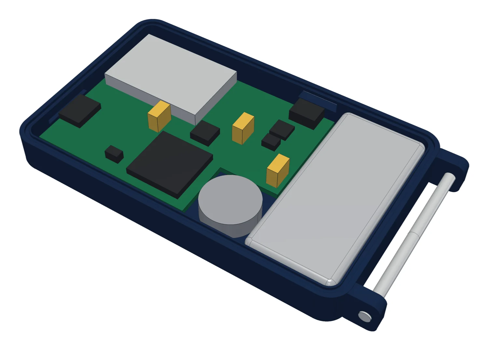
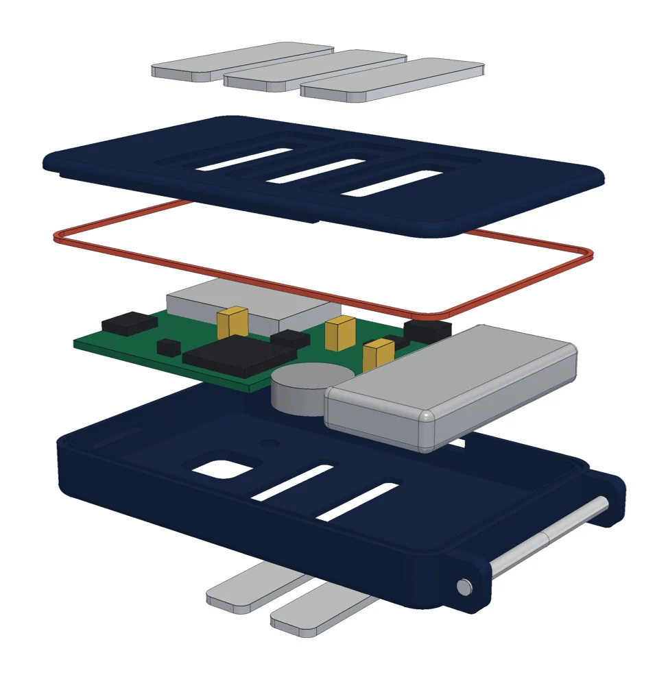

הגודל שיצא מהחישוב
שטח הלוח חושב מרשימת הרכיבים, הסוללה מצריכת הזרם, והעובי מהערימה של מה שיושב זה על זה.
48.9 × 30 × 7.5 מ״מ
המודול, עם לוח ראשון מרווח
42.1 × 30 × 7.5 מ״מ
אחרי צמצום הלוח
100 mAh
כשבועיים במרפאה, 60 הקלטות ביום
כ-30 גרם
עם הרצועה. המותר במפרט: 40
| מקור | אורך × רוחב × עובי, מ״מ | מה זה |
|---|---|---|
| ההדמיה | 35 × 26 × 6 | לא חושב מהרכיבים |
| המפרט | 45 × 30 × 12 | לא חושב מהרכיבים |
| החישוב, סוללה לצד הלוח | 48.9 × 30 × 7.5 | ההמלצה: דק |
| החישוב, סוללה מעל הלוח | 36 × 28 × 11.9 | קצר אבל עבה |
יצא שטח קרוב למפרט ועובי קרוב להדמיה. הקלטה של 10 שניות צורכת מעט מאוד, ולכן מספיקה סוללה של 100 mAh במקום 150–300 שבמפרט, וזה מה שמאפשר מודול דק. העובי עלה ב-0.2 מ״מ כשנכנס חיישן ה-PPG מתחת ללוח. החישוב הזה הוא לקופסה שטוחה. באי המעוקל החלקים הגבוהים יושבים באמצע, שם יש הכי הרבה גובה, ולכן האי נשאר 7.2. המספרים יתעדכנו כשכל מידה תאומת מול דף היצרן.
כל מה שצריך להיות מוכן
כל מה שהמפעל צריך לקבל, חלק אחרי חלק. הרשימה נוצרת מקובץ אחד בתיקייה, system/product_tree.py, ובדיקה אוטומטית נכשלת אם לחלק אין קובץ, אין בדיקה או אין אחראי.
37 חלקים
23 חסרים, 2 סותרים, 0 נבדקו
18 חיבורים
7 סותרים, 3 לא מוגדרים
13 דרישות
6 בלי בדיקה, 3 סותרות את התכנון
בתוך המכשיר
מה המפעל מקבל
מצב, ומה חסר
שלב
הלוח האלקטרוניקובצי ייצור: Gerber, קידוח, מיקום רכיבים, שרטוט שכבות ושרטוט הרכבה
חלקימצויר ומחובר כמעט כולו. חסרים 6 חיבורים: 4 בסוללה, אחד באדמה ואחד ב-3V. חסרים גם מעבר ידני על הכניסות האנלוגיות וסימוני יישור, ושום קובץ ייצור עוד לא הופק.
3
רשימת רכיבים להזמנהמק״ט יצרן וחלופה לכל רכיב, ובדיקת מלאי
חלקייש ערכים ותבניות ל-128 רכיבים. אין מק״ט לסוללה, למנוע, לקפיצים ולרכיבים הקטנים, ואף רכיב לא נבדק במלאי.
3
הסוללהדגם מסוים, דף נתונים ותעודות IEC 62133-2 ו-UN 38.3
חסריש רק גודל: 401225, כ-100 mAh. בדף הדרישות כתוב 150–300 mAh.
3
מגעי הקפיץדגם קפיץ, גובה וכוח לחיצה, ומשטח נחיתה על הפלדה. 5 לאלקטרודות ו-2 לטעינה
חסרבלוח יש במקומם משטחים ריקים בלבד.
3
מנוע הרטטדגם, ואיך הוא מוחזק במארז
חסרכתוב רק ״מנוע מטבע 8 מ״מ״, בלי דגם ובלי תושבת.
3
המארז: שני החצאים והזיזיםשרטוטים עם טולרנסים, חומר, חיבור בין החצאים, אחיזה ללוח, וגרסה להדפסה
חלקיקיים כמודל עיצוב בלבד, ומצויר ללוח של 25 מ״מ. הלוח האמיתי 32 מ״מ ולא נכנס. אין שרטוטים, אין חיבור בין החצאים ואין אחיזה ללוח.
3
משטחי הפלדה של היד והרגלשרטוטים, פלדת 316L בדרגה שעוברת EN 1811 (שחרור ניקל), גימור ושיטת ייצור
חלקיקיימים במודל בלבד.
3
חלון הספיר, המרכז הקרמי ומגעי הטעינהשרטוטים ומפרט חומר; לחלון גם מפרט אופטי
חלקיקיימים במודל בלבד.
3
אטימה והדבקהאטם, דבק ותהליך לכל מפגש: החצאים, המשטחים, החלון וכניסת הפלקס
חסראין אטם או דבק במודל, ויש חור במארז מאחורי כל משטח פלדה. הדרישה היא IP54.
3
מוביל האור של הנוריתחלק שקוף במארז, מעל הנורית שבלוח
חסרמוזכר בקוד המודל, לא מצויר.
3
האנטנהבדיקת קליטה על היד, בתוך המארז
חלקימשתמשים באנטנה של המודול, ויש אזור אסור בלוח. אין ניתוח ואין בדיקה.
3
חיישן הדופק האופטי והמדחום (אופציה)דגם אחד שמוסכם בלוח ובמודל, ומחסום אור בין הנורית לגלאי
סותרבסכמה MAX30102, במודל ובחישוב הגודל MAXM86161. לא מותקנים ביחידות הראשונות.
4
הרצועה
מה המפעל מקבל
מצב, ומה חסר
שלב
המעגל הגמישGerber, שרטוט עם השכבות, המחזק והכיסוי, לכל אורך רצועה
חלקימצויר ועובר את בדיקת KiCad, באורך אחד. חסרים שרטוט ייצור, אימות צד המגעים מול שרטוט המחבר, ושלושת האורכים.
3
רצועת ה-FKMתבנית יציקה, סוג החומר, איך מכניסים את הפלקס, ושלוש מידות
חלקימודל לפרק יד אחד בלבד. אין תבנית ואין חומר מוגדר. לחמש יחידות: יציקה בתבנית מודפסת.
3
משטחי ה-RA והפינים שלהםשרטוט, ואיך הפין נשאר לחוץ על הפלקס לאורך זמן
חלקיהמיקומים מסכימים עם הפלקס. החיבור עצמו הוא לחיצה בתוך הגומי, בלי חלק ובלי תהליך.
3
הסקוטש, הלולאה והמוטספק סקוטש, הדבקה לגומי, ואיך המוט ננעל בזיזים
חלקיבמודל בלבד.
3
הטעינה
מה המפעל מקבל
מצב, ומה חסר
שלב
המעמדסכמה, לוח, פינים קפיציים, הגבלת זרם ומארז
חלקייש רק צורה במודל. אין בו אלקטרוניקה ואין מגנטים, וממילא פלדת 316L לא נמשכת למגנט, אז צריך דרך אחרת להחזיק את הצמיד במקום.
3
ספק הכוח והכבלספק USB עם אישור בטיחות, וכבל
חסרלא נבחרו.
3
תוכנה
מה המפעל מקבל
מצב, ומה חסר
שלב
קושחת המוצרקושחה על nRF Connect SDK: דגימה מה-ADS1294, הפחתה ל-500, Bluetooth מוצפן, חסימת הקלטה בזמן טעינה, סוללה, נורית ורטט
חסריש רק קושחת שולחן ל-XIAO, ב-Arduino. חלק מהדרייבר של השבב ישמש שוב.
3
עדכון קושחה חתוםMCUboot, עדכון חתום דרך Bluetooth, ושמירת המפתחות
חסרבלעדיו אי אפשר לעדכן יחידה סגורה: נקודות הצריבה בתוך המארז.
4
קושחת בדיקה למפעלתוכנה שבודקת כל לוח בסוף הייצור ורושמת מספר סידורי
חסרלא התחיל.
מפעל
האפליקציה: 4 ערוצים ו-500 דגימותפרוטוקול חדש ב-CYPHIX_SHARED, ב-Web, ב-iOS וב-Android
חסרהיום רק 320 Hz, כך שרוחב הפס של SYS-02 לא מגיע לרופא.
4
בדיקה והרכבה
מה המפעל מקבל
מצב, ומה חסר
שלב
ניסוי שלב 1: אלקטרודות יבשותהוראות ניסוי בגדלים של גרסה 3.2
סותרההוראות בודקות משטחים של 7 × 21 מ״מ במרווח 2 מ״מ. בגרסה 3.2 המשטחים גדולים פי 2.7 והמרווח 0.6 מ״מ. לעדכן לפני ההרצה.
3
תכנית הבדיקה של הלוח12 צעדים, מהחשמל הראשון ועד אדם
טיוטהכתובה, לא נוסתה. חסרות בדיקות לרוחב הפס, לעכבת הכניסה ולהתאמה בין הערוצים.
3
צריבה ובדיקת סוף קוכבל TC2030 לצריבה, ומתקן פינים לבדיקה
חסררק הכבל נבחר בשם.
3
סימולטור אק״גמכשיר שמזריק אות ידוע לאלקטרודות, לבדיקה בלי אדם
חסרמוזכר בצעד 10 של תכנית הבדיקה, לא נבחר.
3
הוראות הרכבהסדר הרכבה, הדבקה, אטימה ובדיקה, לחמש היחידות הראשונות
חסרלא התחיל.
3
תווית, מספר סידורי, אריזה והוראות שימושתווית ״מכשיר בניסוי״, מספר סידורי לכל יחידה, הוראות שימוש וניקוי
חסרלא התחיל.
4
בטיחות, תקינה והניסוי
מה המפעל מקבל
מצב, ומה חסר
שלב
ניתוח סיכונים, ISO 14971רשימת כשלים ומה מונע כל אחד: מגעי הטעינה, זיעה בין המשטחים, סוג החלק שבמגע עם המטופל
חסרנחוץ לפני שיחידה שלנו עולה על אדם, גם עליך.
3
בטיחות חשמלית ותאימות אלקטרומגנטיתבדיקות IEC 60601-1, IEC 60601-1-2, ו-IEC 60601-1-11 לשימוש בבית
חסרבסכמה יש מגבלות זרם לפי התקן. שום בדיקה עוד לא תוכננה.
4
ביצועי האק״גבדיקות לפי IEC 60601-2-25 או 60601-2-47: רוחב פס, רעש, דחיית אות משותף, עכבת כניסה
חסראיזה מהשניים חל תלוי בייעוד שנכתוב למכשיר.
4
חומרים במגע עם העוררשימת חומרים עם נתוני ISO 10993 (חלקים 5, 10, 23), שחרור ניקל EN 1811, וחומר חיטוי מאושר
חסרלא התחיל.
4
אישורי רדיואישור משרד התקשורת. בהמשך: EN 300 328, EN 301 489, FCC Part 15
חסרלמודול יש אישורים משלו; למוצר השלם צריך לבדוק.
4
תיעוד התוכנה ואבטחת מידעIEC 62304: תכנית, דרישות, בדיקות ורשימת רכיבי צד שלישי. IEC 81001-5-1 לאבטחה
חסרלא התחיל, ונכתב יחד עם קושחת המוצר.
4
תיק הניסוי בבית החוליםתכנית ניסוי לפי ISO 14155, חוברת חוקר, ועדת הלסינקי והגשה למשרד הבריאות
חסרלא התחיל.
4
שמישות, IEC 62366-1בדיקה שמבוגרים מצליחים לשים, להקליט ולטעון בלי עזרה
חסרלא התחיל.
מפעל
מערכת איכות, ISO 13485נהלים, רישום שינויים ומעקב אחרי כל יחידה
חסרנחוץ לפני ייצור סדרתי.
מפעל
החיבורים בין החלקים
כאן נפלו הפלקס והלוח הארוך: כל חלק היה בסדר לבד, והחיבור ביניהם לא היה של אף אחד. חיבור מוגדר רק כששני הקבצים, משני הצדדים, מסכימים על אותה מידה.
על מה שני הצדדים צריכים להסכים
מצב
שלב
הלוח בתוך המארזאורך הלוח, מקומו, גובה הרכיבים מול הקירות, והסוללה לידו
סותרהלוח 32 מ״מ והמודל מצויר ל-25. הסוללה במודל יושבת איפה שהלוח האמיתי נגמר. הערכה ראשונה: הארכת האי לבד לא מספיקה, צריך גם עובי או סידור אחר.
3
הקפיצים אל משטחי הפלדהמיקום כל קפיץ לאורך האי
סותרארבעת הקפיצים במקום אחר במודל ובלוח, הפרש של 2 עד 6.3 מ״מ. כל קפיץ עדיין מתחת למשטח הנכון, אבל לא מול החור שלו במארז.
3
מנוע הרטטמקום המנוע
סותר13.3 מ״מ בין המקום במודל למקום בלוח.
3
הסוללה אל הלוחמקום הלשוניות
סותר4.8 מ״מ בין המודל ללוח.
3
הנורית אל קו האורמקום הנורית
סותר3.1 מ״מ בין המודל ללוח, ואין מוביל אור ביניהם.
3
הפלקס אל המחבר בלוחרוחב הזנב, מספר המגעים וצד המגעים
סותרבפלקס זנב של 2.5 מ״מ למחבר של 4 מגעים. במודל הזנב ברוחב 13.4 מ״מ. צד המגעים לא אומת.
3
פיני ה-RA אל הפלקס34.5 ו-49.1 מ״מ מקצה האי
טיוטההמיקומים מסכימים. הלחיצה עצמה לא מוגדרת ולא נבדקה.
3
הרצועה אל האי, בצד הקבועהלשון, העוגן, והאטימה בכניסת הפלקס
חלקיבמודל בלבד. האטימה בכניסת הפלקס לא מוגדרת.
3
הרצועה אל האי, בצד החופשיהמוט בזיזים, ואיך הוא ננעל
חלקיהמוט קיים, הנעילה שלו לא.
3
הסקוטש אל הגומישיטת הדבקה וחוזק
חסרלא מוגדר.
3
שני חצאי המארז זה לזהסוג החיבור, האטם והטולרנס
חסרכתוב ״מרותכים באמצע הגובה״. אין תכנון לחיבור.
3
המשטחים, החלון והקרמיקה בתוך המארזאיך כל אחד מוחזק ונאטם
חסראין אטם ואין דבק, ויש חור מאחורי כל משטח.
3
החיישן האופטי אל החלוןגובה החיישן מול הבליטה שבחלון
סותרהמודל מצויר לחיישן בגובה 1.4 מ״מ, ובסכמה MAX30102 שגבוה יותר.
4
מגעי הטעינה אל הלוח±9 מ״מ, במרכז האי
טיוטההמיקומים מסכימים. דגם המגע והאטימה שלו לא נבחרו.
3
הצמיד אל המעמדמקום הפינים, מתח וזרם, ואיך הצמיד נשאר במקום
חלקיהפינים מסכימים במודל. אין חשמל במעמד ואין מה שיחזיק את הצמיד.
3
האנטנה מול המארז והידמרחק מהפלדה ומהיד, וטווח
חלקיאזור אסור בלוח בלבד.
3
המכשיר אל האפליקציהפרוטוקול ה-Bluetooth
חלקיקיים רק פורמט התאימות של 320 Hz. אין פרוטוקול ל-4 ערוצים ו-500, ואין הצפנה.
4
המכשיר אל הצריבהגישה לנקודות הצריבה
חלקיהנקודות בלוח. במארז סגור אין אליהן גישה.
3
כל דרישה ואיך בודקים אותה
כל דרישה מדף הדרישות הטכניות, מה בתכנון עונה עליה, ואיך מוכיחים שהיא מתקיימת.
מה בתכנון עונה עליה
איך מוכיחים
שלב
SYS-01 שני לידים, כל אחד פעמיים, ומהם 64 ערוצים: LA מול RA1 ומול RA2, LL1 ו-LL2 מול LA
חלקיצעד 11 בתכנית הבדיקה, על אדם אחד, בלי מדד דיוק. ההשוואה למכשיר 12 לידים תהיה בניסוי.
4
SYS-02 500 דגימות בשנייה, 0.05–150 Hzהשבב דוגם 1,000 והקושחה מפחיתה ל-500. הקושחה הזאת עוד לא קיימת
חסראין. צריך מדידת תגובת תדר מסימולטור. גם האפליקציה היום ב-320 בלבד.
3
ELC-01 6 אלקטרודות יבשות על 7 משטחיםמשטחי 316L של גרסה 3.2
חלקיניסוי שלב 1, אבל ההוראות בגדלים ישנים.
3
ELC-02 ADS1294 בכל יחידהADS1294IPAG בסכמה ובלוח
טיוטהצעד 6: קריאת מספר הזיהוי של השבב.
3
ELC-03 עכבה גבוהה, רכיבים מותאמים, מקום למגברנגדים של 0.1%, קבלים C0G, מקום למגבר ליד כל אלקטרודה
חסראין. צריך מדידה של עכבת הכניסה, ההתאמה בין הערוצים ודחיית אות משותף.
3
ELC-04 nRF52840 במודול עם אישוריםMDBT50Q-1MV2
חלקיצעד 5: חיבור ב-1 וב-5 מטר. חסרה בדיקת טווח כשהצמיד על היד.
3
FW-01 קושחה על nRF Connect SDK, עדכון חתום, דגימה לפי DRDYאין עדיין. קושחת השולחן כתובה ב-Arduino
חסראין.
3
PWR-01 סוללה, מטען, ווסת שקט, טעינה במגעים100 mAh, מטען MCP73831, מגעים שטוחים. בדף הדרישות: 150–300 mAh, BQ25120A, פיני pogo
סותרצעדים 3, 7 ו-9. אין שיטה למדידת זמן הסוללה.
3
SAF-01 בלי הקלטה בזמן טעינה, מגעים מבודדים, זרם מתחת ל-10 µAגשר, מפקח מתח ושני טרנזיסטורים שמנתקים את המגעים, ו-47.5 kΩ פעמיים בכל קו
סותרצעדים 8, 9 ו-12. החסימה בקושחה לא קיימת. 10 או 50 µA בתקלה בודדת עדיין פתוח.
3
MEC-01 בערך 46 × 30 × 7.2 מ״מ, עד 40 גרם, IP54המודל בגודל הזה, אבל הלוח האמיתי לא נכנס בו
חסראין בדיקה לגודל, למשקל או לאטימה. חישוב המשקל נעשה לרצועת סיליקון ולמשטחים הקטנים; עם FKM ומשטחי 3.2 הוא עלול לעבור 40 גרם.
3
UI-01 כפתור, נורית ורטטנורית, רטט ומשטח מגע. אין כפתור
סותראין.
3
OPT-01 מקום לחיישן אופטי ומדחוםמקום בלוח וחלון במארז; שני דגמים שונים בסכמה ובמודל
חסראין.
4
REG-01 IEC 60601-1, חומרים עם ISO 10993, בדיקות מקדימותמגבלות הזרם בסכמה
חסררק ״מעבדה מוסמכת״ בצעד 12. ISO 10993 והבדיקות המקדימות לא מוגדרות.
4
השלבים
כל שלב עונה על שאלה אחת. אם התשובה לא טובה, מתקנים לפני שממשיכים, והכסף של השלב הבא לא יצא.
0
על המחשב
בלי עלותבעבודה
- השאלה
- האם התכנון סגור: הגודל מחושב, הסכמה מלאה, הרכיבים זמינים, והכול נכנס במארז?
- איך
- רשימה של כל החלקים, החיבורים והדרישות, ולכל אחד קובץ. חישוב גודל וסוללה, מודל, סכמה ולוח, פלקס, ותכנית בדיקה.
- עובר אם
- ברשימה אין ״חסר״ או ״סותר״ שנחוץ לשלב 3, הבודק העצמאי לא מוצא חור, ומהנדס חתם על הלוח.
- מי
- אני, ובודק עצמאי לפני שעוברים שלב.
1
אלקטרודות יבשות על האב-טיפוס הקיים
כמעט בלי עלותהבא בתור
- השאלה
- האם משטחי מתכת יבשים בגודל המתוכנן נותנים אק״ג קריא? זה הסיכון הגדול ביותר, ואפשר לבדוק אותו כבר היום.
- איך
- מחליפים את מדבקות הג׳ל במשטחי נירוסטה ומקליטים עם האפליקציה הקיימת.
- עובר אם
- רואים פעימה ברורה בכל ליד, והרעש בין הפעימות קטן לפחות פי 10 מגובה הפעימה.
- מי
- אתה מחבר ומקליט לפי הוראות שאכתוב. אני מנתח את ההקלטות.
2
השבב החדש על השולחן
כמעט בלי עלותבבדיקה: חיווט ישיר של הלוח שכבר יש לך
- השאלה
- האם משפחת ה-ADS1294 וארבעת הערוצים עובדים עם האלקטרודות היבשות, והאפליקציה מציגה את האות?
- איך
- לוח השבב של TI שכבר קנית (ADS1298, אותה משפחה ואותה קושחה), בלי לוח האם שלו ובלי התוכנה של TI. מחווטים אותו ישירות ל-XIAO nRF52840 שלך. הקושחה משדרת בפורמט הקיים, כך שהאפליקציה לא משתנה.
- עובר אם
- הקלטה של 10 שניות מגיעה לאפליקציה מארבעה ערוצים, בלי דגימות חסרות.
- מי
- אני מכין את טבלת החיווט וכותב קושחה. אתה מחווט ומקליט.
3
יחידה לבישה ראשונה
המחיר מחושב מחדשממתין
- השאלה
- האם הלוח הממוזער, המארז, הרצועה והמוליך שבתוכה עובדים יחד על היד?
- איך
- לוחות מורכבים מהמפעל, מארז מודפס, משטחי פלדה, מעגל גמיש, רצועה יצוקה ומעמד טעינה.
- המחיר
- ההערכה הקודמת, 800–1,500 דולר ל-5 יחידות, לא כללה פלדה בעבודה אישית, ספיר, קרמיקה, תבנית לרצועה ואת המעמד. היא תחושב מחדש מרשימת הרכיבים.
- עובר אם
- 10 הקלטות מלאות מתוך 10 על היד, הסוללה מחזיקה כמתוכנן, והמוליך שורד בדיקת כיפוף.
- מי
- אני מכין את קובצי הייצור. אתה מזמין, מרכיב ובודק. מהנדס אלקטרוניקה מבקר את הלוח לפני ההזמנה.
4
סבב תיקונים ובטיחות
800–1,500 דולר, ועוד מעבדהממתין
- השאלה
- האם היחידה בטוחה ויציבה מספיק לניסוי בבית חולים?
- איך
- סבב שני עם התיקונים, מדידת זרם מטופל במעבדה מוסמכת, חומרים עם תיעוד רפואי, בדיקת חיטוי.
- עובר אם
- המעבדה מאשרת את מדידות הבטיחות, והיחידה עומדת בניגוב חוזר באלכוהול.
- מי
- מעבדה מוסמכת והגורם המלווה בבית החולים. אני מכין את התיעוד.
הסיכונים
מסודרים לפי חומרה. לכל סיכון יש בדיקה זולה, והשלב שבו היא נעשית.
הסיכוןאיך בודקים בזולשלב
אלקטרודות יבשות לא נותנות אות נקיבלי אות אין מוצר.
משטחי נירוסטה על האב-טיפוס שכבר עובד, ואחר כך על לוח הניסוי.
1, 2
האלקטרוניקה והסוללה לא נכנסות במודול נוחהגדלים בהדמיה ובמפרט לא חושבו מהרכיבים.
חישוב מהרכיבים האמיתיים, מודל CAD מוצק, ואחריו הדפסה למדידה על היד.
0, 3
השבב החדש ותוכנית ארבעת הערוציםשבב אחר מזה שבאב-טיפוס, וקושחה חדשה.
לוח השבב של TI שכבר אצלך, מחווט ל-XIAO, לפני שמתכננים לוח משלנו.
2
האפליקציה לא מקבלת את האות החדשהאפליקציות נעולות היום על 320 דגימות בשנייה.
מצב תאימות בקושחה: המכשיר החדש משדר בפורמט הקיים. את האפליקציה מעדכנים רק אחרי שהחומרה מוכחת, ובאישורך.
2
המוליך ברצועה נשבר או מתנתקRA1 ו-RA2 יושבות על הרצועה, מעבר לציר.
דגימת מעגל גמיש בבדיקת כיפוף, ויציקת ניסיון בסיליקון.
3
רעש או קליטה חלשה בלוח הממוזעראות של מיקרו-וולטים ליד אנטנה.
הולכים לפי לוח הייחוס של TI, ומהנדס אלקטרוניקה מבקר לפני כל הזמנה.
2, 3
רכיב חסר במלאי, או שהמפעל לא מרכיב אותועיכוב של חודשים.
בדיקת זמינות לכל רכיב לפני שמקבעים את הסכמה, וחלופה לכל רכיב קריטי.
0
זיעה מקצרת בין אלקטרודות, או שהאטימה נכשלתהאות נעלם בשימוש אמיתי.
מרווח מבודד ואטם כבר ב-CAD, ובדיקת טפטוף על יחידה מודפסת.
0, 3
בטיחות המטופל ותקינהתנאי לניסוי בבית חולים.
מתכננים לפי IEC 60601-1 מהיום הראשון: זרם מטופל מוגבל, אין הקלטה בזמן טעינה. מודדים במעבדה.
0, 4
חלקים שכל אחד בסדר לבד, ויחד לא מתחבריםכך נפלו הפלקס והלוח הארוך.
כל חיבור הוא שורה ברשימה, וקובץ מיקומים אחד שגם המודל וגם הלוח קוראים ממנו.
0
המשקל עובר 40 גרםרצועת FKM כבדה מסיליקון, והמשטחים גדלו.
חישוב מחדש מהמודל, ושקילה של יחידה מודפסת.
0, 3
טעות שלי בתכנוןאני לא מודד ולא מלחים, והחמצתי חלקים שלמים.
כל שלב נבדק במדידה אמיתית, אדם מבקר כל לוח לפני הזמנה, ובודק עצמאי עובר על כל הקבצים לפני כל שלב.
בכולם
מה אני צריך ממך
- ניסוי שלב 1. להחליף את מדבקות הג׳ל במשטחי נירוסטה ולהקליט. ההוראות המלאות כאן למטה.
- לוח ה-ADS1298 של TI. לחבר את ה-XIAO למחשב ב-USB כדי שאצרוב עליו את הקושחה, ואז לחווט לפי ההוראות לשלב 2 שכאן למטה.
- שום קנייה כרגע. לפני כל קנייה אציג מה קונים, כמה זה עולה ולמה.
הוראות לניסוי שלב 1
בטיחות: האב-טיפוס מחובר ב-USB רק למחשב נייד שמנותק מהמטען, או לסוללת גיבוי. אף פעם לא למשהו שמחובר לשקע בזמן שהאלקטרודות על הגוף.
מה צריך
- האב-טיפוס עם חמשת החוטים: RA, LA, LL#1, LL#2, RLD.
- שבע חתיכות נירוסטה. לסבב ראשון מספיק מה שיש בבית: דסקיות נירוסטה M8, ידיות של כפיות, או פס נירוסטה גזור.
- קליפס תנין או הלחמה, לחבר כל חתיכה לחוט שלה.
- מדבקות הג׳ל הרגילות, להשוואה. קרטון קשיח וסרט הדבקה.
הגדלים שבודקים
| משטח | הגודל במוצר | תחליף ביתי |
|---|---|---|
| LL1, LL2, RLD | 7 × 21 מ״מ כל אחד, על הרגל | דסקית M8 |
| LA | שני משטחים של 5.5 × 21 מ״מ על חוט אחד, על שורש כף היד | שתי דסקיות M6 על חוט אחד |
| RA | 9.4 × 19 מ״מ, לאצבעות יד ימין | דסקית M8 |
את שלושת משטחי הרגל מדביקים בשורה על קרטון, במרווח של 2 מ״מ, בסדר LL1, RLD, LL2. זה הסידור שבמוצר.
איך מניחים
- שורש כף יד שמאל: משטחי ה-LA על הצד הפנימי, מוחזקים ברצועת הסקוטש.
- רגל שמאל, על עור חשוף מעל הברך: הקרטון עם שלושת המשטחים. שורש כף היד נח על הקרטון ולוחץ אותו לרגל.
- יד ימין: שתי אצבעות על משטח ה-RA.
- מקליטים 10 שניות באפליקציה, בישיבה, בלי לדבר.
סדר ההקלטות
שלוש הקלטות בכל מצב. בין מצב למצב רושמים שעה, מצב, ומה הרגשת: לחץ חזק או חלש, זיעה.
| מצב | מה עושים | למה |
|---|---|---|
| A | מדבקות ג׳ל, כמו היום | קו הבסיס להשוואה |
| B | משטחים יבשים, עור יבש | המצב האמיתי |
| C | אותו דבר, אחרי ניגוב העור במטלית לחה | המקרה הטוב |
| D | חצי מכל משטח מכוסה בסרט בידוד | כמה הגודל משפיע |
| E | כמו B, עם חוט ה-RLD מנותק | האם ה-RLD באמת נחוץ |
מה התוצאה קובעת
- עובר במצב B: ממשיכים עם משטחים בגודל הזה, בלי מגבר ליד כל אלקטרודה.
- עובר רק במצב C: צריך משטחים גדולים יותר או חומר אחר, והמודול גדל.
- נכשל גם ב-C: מוסיפים מגבר ליד כל אלקטרודה, שיש לו מקום בלוח, ובודקים שוב.
הוראות לשלב 2: לוח TI מחובר ל-XIAO
בטיחות: כשאלקטרודות על הגוף, ה-XIAO רץ מסוללה בלבד וכבל ה-USB מנותק. TI כותבת שהלוח אינו מיועד לחיבור ישיר למטופל: אין בו דיודות הגנה, ומה שמגביל זרם הוא נגד של 32.1 kΩ בכל כניסה. זה ניסוי שולחני שלך על עצמך, כמו האב-טיפוס. לא על מטופלים.
משתמשים רק בלוח הקטן של TI. לוח האם והתוכנה של TI נשארים בקופסה. החיווט נגזר מהסכמה של TI ועוד לא נוסה על לוח, ולכן כל צעד נגמר בבדיקה. את האב-טיפוס הישן מכבים בזמן הניסוי, כי שני המכשירים משדרים באותו שם.
א. ג׳מפרים על הלוח של TI
| ג׳מפר | לשנות ל | מה זה עושה |
|---|---|---|
| JP2 | 2-3 | מתח אנלוגי חיובי בלבד, 3.0V |
| JP20 | 1-2 | הצד השלילי לאדמה |
| JP23 | 2-3 | שעון פנימי |
| JP18 | להסיר | מנתק את המתנד שעל הלוח |
| JP19 | 2-3 | מכבה את המתנד שעל הלוח |
| JP16 | להסיר | מנתק את WCT מהפס המשותף |
כל השאר נשארים כמו מהמפעל: JP24 על 2-3, JP21 על 1-2, JP22 על 2-3, JP4 ו-JP1 מותקנים, JP5 פתוח.
ב. מתח, ובדיקה במודד
| נקודה בלוח TI | מה | פד ב-XIAO |
|---|---|---|
| TP7 | כניסת 5V | VUSB כשעל USB, BAT+ כשעל סוללה |
| TP10 | 3.3V | 3V3 |
| TP8 | אדמה | GND |
בדיקה: TP7 מראה 5V, TP5 מראה 3.0V, הפין האמצעי של JP2 מראה 3.0V, של JP20 אפס, ושל JP24 3.3V. אם אחד מהם שונה, עוצרים.
ג. תשעה חוטי אותות
| פין בלוח TI | אות | פד ב-XIAO |
|---|---|---|
| J3-3 | SCLK | 8 |
| J3-11 | DIN | 10 |
| J3-13 | DOUT | 9 |
| J3-1 | CS | 7 |
| J3-15 | DRDY | 3 |
| J3-14 | START | 2 |
| J3-8 | RESET | 1 |
| JP5, הפין שבצד האות | PWDN | 0 |
| J3-4 | אדמה | GND |
J3 הוא שקע בתחתית הלוח, והמספור מתהפך כשמסתכלים מלמטה. בדיקה, בלי אלקטרודות: מחברים את ה-XIAO למחשב. הקושחה מדפיסה את מספר הזיהוי של השבב, והלוח הזה צריך להחזיר 0x92.
ד. אות הבדיקה הפנימי, עד האפליקציה
לשבב יש אות ריבועי פנימי של כמילי-וולט. מפעילים אותו מהמחשב, והאפליקציה הקיימת אמורה להציג גל ריבועי בכל הלידים. זה בודק את כל השרשרת (שבב, קושחה, BLE, אפליקציה) בלי אלקטרודה אחת על הגוף.
ה. אלקטרודות, עם חוט אחד
- מסירים את שני הג׳מפרים הקטנים מכל אחד מ-JP26, JP31, JP32, JP33. על JP27 עד JP30 הם נשארים.
- חוט אחד מפין 3 של JP32 לפין 1 של JP33.
- אלקטרודות למחבר J1: LA לפין 10, LL1 לפין 1, LL2 לפין 2, RA1 לפין 3, RA2 לפין 4, RLD לפין 14.
- בודקים במודד: בין כל פין ב-J1 לפין 3 של הג׳מפר שלו צריך למדוד 32.1 kΩ.
- עוברים לסוללה, מנתקים USB, ומקליטים 10 שניות באפליקציה. קודם עם מדבקות ג׳ל, אחר כך עם המשטחים היבשים.
יומן
המעגל הגמיש שבתוך הרצועה תוכנן כלוח לייצור: 61.7 מ״מ, קו נפרד לכל אלקטרודת RA ושומר ביניהם, משטחי מגע בדיוק במקום הפינים של המודל, וזנב למחבר בלוח. ללוח נוספו נקודות בדיקה לכל המתחים, ונכתבה תכנית בדיקה של 12 צעדים. בתצוגה התלת-ממדית אפשר עכשיו לסובב גם את הלוח ואת הפלקס.
הקווים בנחושת צוירו אוטומטית בתוכנה Freerouting: 1,541 קטעים ו-174 מעברים בין שכבות, על לוח של 6 שכבות עם שכבת אדמה ושכבת סוללה. ב-4 שכבות זה לא נסגר. בדיקת KiCad עוברת בלי שגיאות, נשאר חיבור סוללה אחד, ומהנדס צריך לעבור על הקווים של האות האנלוגי לפני הזמנה.
הלוח הראשון: 32 על 26 מ״מ, 4 שכבות. מגעי הקפיץ לאלקטרודות, מגעי הטעינה, החיישנים מתחת לחלון והסוללה ממוקמים בדיוק לפי המודל התלת-ממדי. שבב ה-ADS1294 ומודול ה-Bluetooth מוקמו ביד, וכל השאר אוטומטית ליד הרגליים שהם משרתים. KiCad בדק: אין התנגשויות, והלוח תואם לסכמה. הקווים בנחושת עוד לא צוירו.
הסכמה החשמלית הראשונה של הלוח, גרסה 0.1: סוללה עם הגנה, טעינה בשני מגעים שעובדת בכל כיוון ומנותקת מהגוף כשאין מעמד, שני ווסתים, שש אלקטרודות עם נגדי הגנה ומסנן, ה-ADS1294, ה-nRF52840, נורה, רטט וחיישנים אופציונליים. KiCad בדק אותה: אין שגיאות, וכל אחד מ-449 הפינים מחובר למקום שתוכנן. עוד לא נבדקה על ידי מהנדס.
גרסה 3.2: העיצוב של 3.1 עם משטח פלדה אחד בכל צד במקום אלקטרודות נפרדות. בצד הרגל משטח פלדה אחד שמחולק בשני קווים דקים, ובצד היד קרמיקה שחורה עם עדשת ספיר ומגעי טעינה שטוחים בין שתי אלקטרודות ה-LA. כל השאר כמו ב-3.1. המודל בודק את עצמו: אין התנגשויות, וכל הגופים תקינים.
גרסה 3.1: המוט בקצה הקבוע ירד, כי שום רצועה לא מתלפפת סביבו. האי מצטמצם שם לרוחב הרצועה, והיא יוצאת ישר מתחתיו. האלקטרודות עכשיו מתכת אחת, פלדה 316L, במקום ציפוי כהה על פלדה. נוסף פרק על החומרים.
גרסה 3 של העיצוב, בשפה של ההדמיה שלך: אי ממוסגר וזהה בשני הקצוות, זיזים ומוטות בארבע הפינות, שלוש אלקטרודות כהות עם שפה מלוטשת, גוף גרפיט ורצועה בכחול-אפור. ההנדסה של גרסה 2 נשארה, והמודל עדיין בלי התנגשויות.
גרסה 2 של העיצוב, לפי ההערות שלך: אי סימטרי, חלון ספיר ל-PPG ולמדחום, משטחים חלקים בלי קמטים, רצועה שממשיכה את האי, סגירה בסקוץ', משטחי RA במרחק מילימטר, סוללה מחוברת ללוח, וצפייה שמסתובבת לכל כיוון. המודל בודק את עצמו: אין התנגשויות, והאי סימטרי עד 0.0 מ״מ.
העיצוב התעשייתי תוכנן מחדש אחרי הביקורת: המודל הראשון היה בדיקת התאמה ולא עיצוב. בגרסה 1 האי קעור (רדיוס 44 מ״מ), הרצועה רציפה ונסגרת סביב מוט, הטעינה במגעים על מעמד, האלקטרודות גדולות ב-80%, ולכל משטח RA קו נפרד במעגל גמיש שיצוק ברצועה. קושחת שלב 2 נשמרה, והוראות החיווט ללוח TI בדף.
המודל המוצק הראשון מוכן, עם קובצי STEP ושש תמונות. אפס התנגשויות. לוח ה-ADS1298 של TI נבדק מול המדריך שלו: אפשר לחווט אותו ישירות ל-XIAO עם 5V, 3.3V ואדמה בלבד.
חישוב הגודל הראשון מוכן: 48.5 × 30 × 7.3 מ״מ עם סוללה של 100 mAh לצד הלוח. KiCad מותקן. הוראות ניסוי שלב 1 כתובות.
ערכת ה-ADS1298 של TI כבר אצלך, אז שלב 2 לא דורש קנייה. במקום לוח האם והתוכנה של TI, מחווטים את לוח השבב ישירות ל-XIAO. טבלת החיווט בבדיקה מול מדריך הלוח.
התכנית נכתבה. הכלים בהתקנה, ושני בירורים רצים: מידות וצריכת זרם של כל רכיב מול דפי היצרן, והאם ערכת הבדיקה של TI מתאימה לשלב 2.
המספרים בדף הם הערכות, והם מתעדכנים כשרשימת הרכיבים נסגרת.